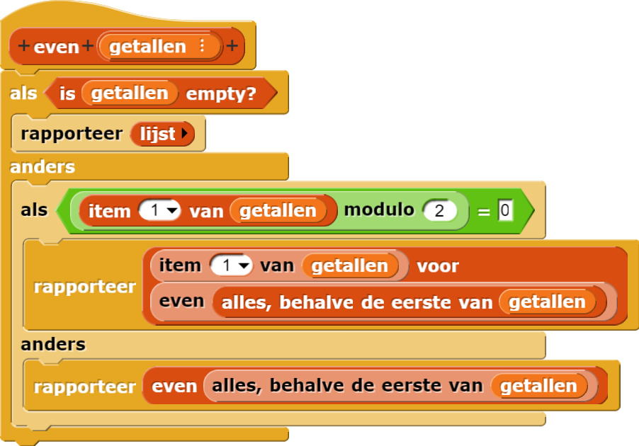
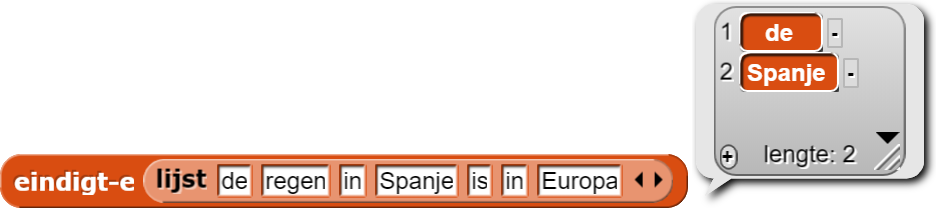
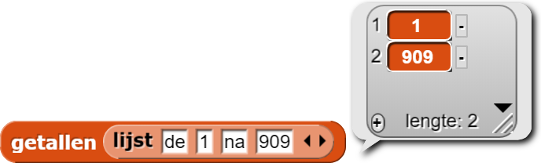

Even Getallen en Keep
We willen een blok dat een lijst met getallen als invoer heeft en een lijst rapporteert met alle even getallen van de invoer.
Je weet al hoe je dit blok moet schrijven met de keepfunctie van hogere orde, maar laten we
eens zien hoe het eruit ziet met recursie:

Er zijn drie gevallen mogelijk, niet zoals gewoonlijk alleen het basisgeval en het recursieve geval. Er is nog steeds een basisgeval, namelijk een lege invoerlijst, in dat geval rapporteren we een lege lijst. Maar er zijn twee recursieve gevallen, afhankelijk van of het eerste element van de lijst even is. (Er moet een eerste element zijn als dit niet het basisgeval is.) De groene blokken van het Functiesmenu delen het eerste getal door 2 en kijken of de rest gelijk is aan 0 (net als bij het omreken naar binair in Hoofdstuk 8 Les 3 Pagina 3: Omrekenen naar Binair). Als de rest gelijk is aan 0 dan is het getal even.
Als het eerste getal even is, dan hoort het getal bij het resultaat dat we rapporteren. Dus we rapporteren
dat getal voor de recursieve aanroep aan de rest van de getallen. Als het eerste getal niet
even is dan willen we het niet toevoegen aan het resultaat, dus we rapporteren alleen de waarde
van de recursieve aanroep.
meervoud , is de evencode een voorbeeld van een
codepatroon. Er is niks speciaals aan even getallen hier. Hetzelfde patroon kan gebruikt
worden om een lijst met oneven getallen te maken, of met getallen die eindigen op 7 of namen die beginnen
met een "z".
Gebruik bij de volgende opdrachten recursie, geen functies van hogere orde.
- Schrijf een blok
eindigt-edat een lijst met woorden als invoer heeft en een lijst met de woorden waarvan de laatste letter een e is, rapporteert.
 - Schrijf een blok
getallendat een lijst met woorden en getallen als invoer neemt en met alleen de getallen van die lijst rapporteert.
 - Generaliseer het patroon om een
keepblok te maken. - Schrijf het
combineblok. Merk op: Het basis geval is een lijst met één element, niet een lege lijst.
even aan te passen.
combineblok van pagina
Hoofdstuk 5 Les 3 Pagina 1: Algoritmes Vergelijken hebt gewerkt, wil waarschijnlijk eerst
kijken hoe dat blok werkt voordat je aan de volgende opdracht begint.
map , keep , en combine is een grote prestatie waar
je trots op mag zijn. Ook al generaliseren deze blokken simpele patronen. Sommige mensen vinden functies
van hogere orde te ingewikkeld en eng voor leerlingen om te gebruiken, laat
staan ze te bouwen. Maar dat heb je net wel gedaan.
- Pas een
sorteeralgoritme dat je geschreven hebt in Hoofdstuk 8 Les 2 Pagina 1: Een Lijst Sorteren aan om als invoer een eigenschap te vergelijken, zoals het groene blok hieronder:

Op die manier kan je sorteren met het grootste element als eerste.